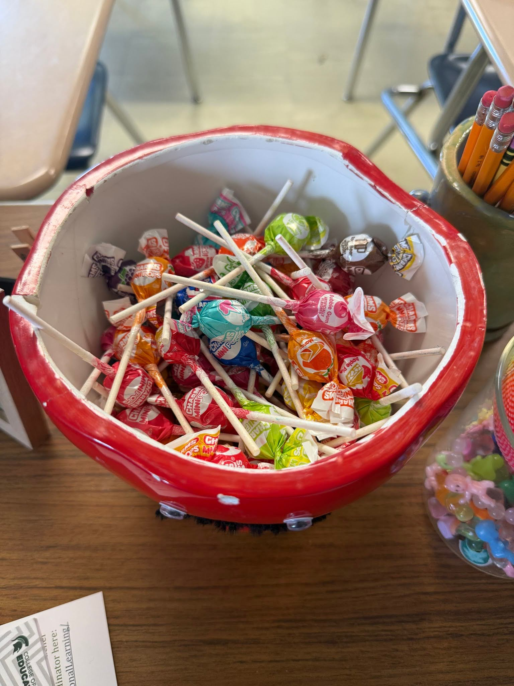

For this example, I used a picture of our classroom candy jar. As I am teaching, I will often ask some pretty difficult guiding questions to keep students engaged. When questions are difficult, and we are trying to discuss these difficult topics, students often might be too scared to give their opinion on a topic for fear they might be wrong. However, throughout my experience so far, I have noticed that if I give students a piece of candy, they are much more willing to at least try to answer the question. When I offer candy, I always notice my students' faces light up with smiles, and I get many volunteers, even from children who don’t participate very often. With all of this being said, it is also important to note that every child responds differently to types of positive reinforcement. It is important to me that I don’t always just shove candy in their face. Many kids respond differently to many forms of reinforcement. I often will give them high fives, fist bumps, words of encouragement, and other forms of reinforcement to allow them to feel good about what they've done.